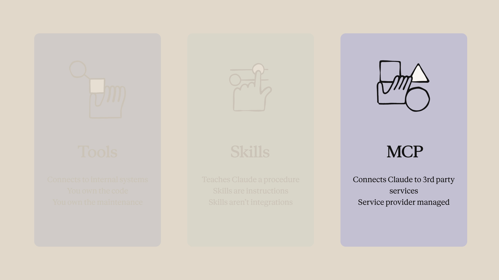
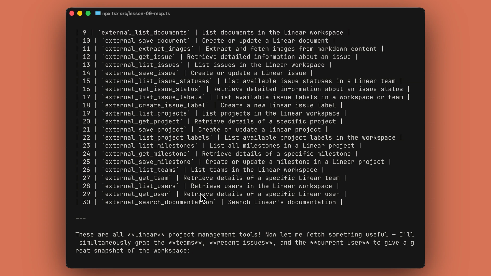

MCP
Чему научитесь
Видео 3:32 и текст урока
К концу урока вы сможете:
- объяснить, зачем нужен MCP, если уже есть инструменты и skills, и когда выбирать каждый из трёх вариантов;
- подключить удалённый MCP-сервер прямо в запросе через
mcp_serversиmcp_toolset; - оставить Claude только нужные инструменты сервера с помощью
default_configиconfigs.
Видео и текст урока.
У нас уже есть инструменты, skills и коннекторы. Зачем тогда нужен MCP? На первый взгляд он выглядит как второй API поверх первого. Вопрос справедливый, и ответ на него сводится к тому, кто поддерживает код интеграции.
Проблема поддержки
Допустим, вашему агенту нужно за один заход забрать задачи из Asana, заглянуть в Google Calendar и поискать в Slack. С собственными инструментами вам придётся написать три интеграции. С этим ещё можно справиться. Трудности начинаются потом: эти интеграции нужно ещё и поддерживать — каждый раз, когда один из сервисов меняет свой API, а меняется он часто. Поздравляем: теперь вы сопровождаете целую кучу обёрток над чужими API.
MCP перекладывает эту поддержку на поставщика сервиса. Asana публикует MCP-сервер. Slack публикует свой. Google — свой. Каждый сервер предоставляет собственные инструменты — с описаниями, схемами и аутентификацией — по стандартному протоколу. Когда их API меняется, они обновляют свой сервер. Вы ничего не меняете.
Инструменты, skills и MCP
У этих трёх возможностей разные задачи:
- Инструменты подключают Claude к вашим внутренним системам — к вашей базе данных, вашему трекеру задач, вашим собственным API. Код ваш — значит, и поддержка ваша.
- Skills учат Claude процедуре — вашему шаблону отчёта, вашему чеклисту ревью. Skills — это инструкции; интеграциями они быть не обязаны.
- MCP подключает Claude к сторонним сервисам, и интеграцию поддерживает поставщик сервиса. Обёртку для Asana пишете не вы — её написала сама Asana.
Коротко: инструменты — для ваших систем, skills — для ваших процессов, а MCP — для чужих систем.

Подключение к MCP-серверу
Проще всего прочувствовать MCP, если подключить Claude к любому MCP-серверу и дать ему самому выяснить, что там есть. В этом примере возьмём MCP-сервер Linear, а параметры подключения и токен авторизации положим в файл .env.
В запросе в связке работают две части. Ключ mcp_servers объявляет подключение: тип, URL, имя, по которому на сервер можно сослаться, и, если нужно, токен авторизации. Затем инструмент с типом mcp_toolset задаёт, какими инструментами этого сервера может пользоваться Claude. По умолчанию — всеми, а если набор нужно сузить, это делается именно здесь.
import os
import anthropic
client = anthropic.Anthropic()
response = client.beta.messages.create(
model="claude-opus-5",
max_tokens=1024,
messages=[
{"role": "user", "content": "What tools do you have available?"}
],
mcp_servers=[
{
"type": "url",
"url": "https://mcp.linear.app/mcp",
"name": "linear",
"authorization_token": os.environ["LINEAR_MCP_TOKEN"],
}
],
tools=[
{
"type": "mcp_toolset",
"mcp_server_name": "linear",
}
],
betas=["mcp-client-2025-11-20"],
)
print(response)
Обратите внимание: мы не написали ни одной схемы инструмента. Claude опрашивает сервер (introspection), получает в ответ список инструментов с их схемами и выбирает подходящий для промпта. На момент урока MCP connector находится в бете — в запросе для этого есть бета-заголовок.
Запустите код: если URL указывает на MCP-эндпоинт Linear, Claude перечислит инструменты Linear, а затем вызовет один из них. То же самое работает практически с любым сервером, который соблюдает протокол. Мы не определили ни одного инструмента. Мы не написали клиент для Linear. Всё это поддерживает сам Linear.

Как ограничить инструменты, доступные Claude
MCP-серверы часто предоставляют очень много инструментов, и не всегда нужно, чтобы Claude пользовался всеми. Может быть, вы не хотите давать ему права на запись, а может, просто не хотите, чтобы все эти определения инструментов занимали контекст.
Решение: по умолчанию отключить всё, а затем включить только нужные инструменты. Вот этот приём на примере MCP-сервера Slack:
tools=[
{
"type": "mcp_toolset",
"mcp_server_name": "slack",
"default_config": {
"enabled": False,
},
"configs": {
"search_messages": {"enabled": True},
"list_channels": {"enabled": True},
},
}
]
Теперь Claude может искать в Slack и получать список каналов, но не может ничего публиковать или удалять. Это удобно, когда сервису можно доверить чтение, но вы не хотите, чтобы Claude по ошибке что-то написал от вашего имени.
Итог
- MCP существует, чтобы вам не приходилось поддерживать интеграции, которые уже написал кто-то другой. Поставщик сервиса публикует MCP-сервер и держит его в актуальном состоянии — когда меняется API сервиса, вы ничего не меняете.
- Выбирайте возможность под задачу: инструменты — для ваших данных, skills — для ваших процессов, MCP — для сторонних сервисов.
- Объявите подключение в
mcp_servers(тип, URL, имя, необязательный токен авторизации) и откройте доступ записьюmcp_toolsetвtools. Claude сам опрашивает сервер и находит инструменты — схемы писать не нужно. - Сузить доступ можно так: задать
default_config: {"enabled": False}и включить нужные инструменты вconfigs. Так удобно сделать сервер доступным только для чтения. - MCP connector пока в бете, поэтому добавляйте в запросы бета-заголовок.
- Список доступных серверов и подробности о протоколе — на modelcontextprotocol.io.
Дальше
Следующий урок — «Управление контекстом»: даже миллиона токенов в реальном агенте хватает ненадолго, и мы разберём, как оставаться в пределах контекстного окна, не теряя важного.
Оригинал урока: MCP.